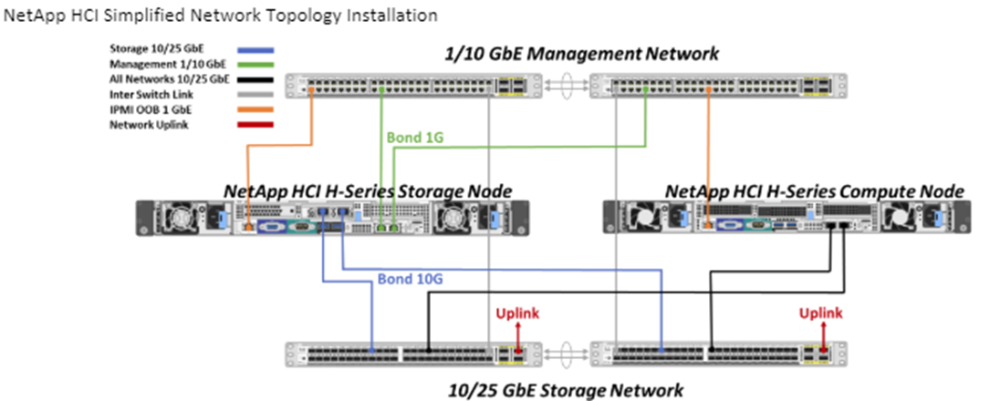
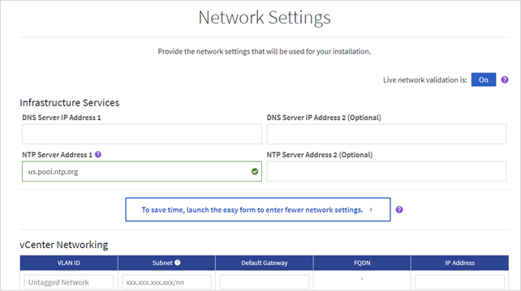
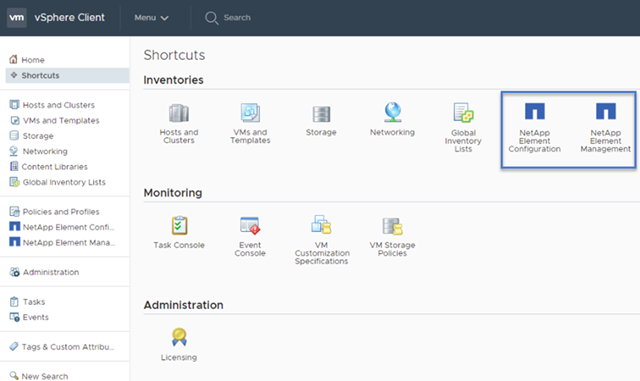

Note di rilascio
Note di rilascio
Panoramica dell'installazione e dell'implementazione di NetApp HCI
 Suggerisci modifiche
Suggerisci modifiche
Seguire queste istruzioni per installare e implementare NetApp HCI. Queste istruzioni includono collegamenti a ulteriori dettagli.
Ecco una panoramica del processo:
Preparazione per l'installazione
Prima di iniziare l'installazione, completare l'elenco di controllo prima del volo del Workbook di rilevamento dell'installazione di NetApp HCI inviato prima di ricevere l'hardware.
Preparare la rete e i siti di installazione
Di seguito viene illustrata un'installazione semplificata della topologia di rete NetApp HCI:

Si tratta della topologia di rete semplificata per un singolo nodo di storage e un singolo nodo di calcolo. Il cluster minimo per NetApp HCI è costituito da due nodi di storage e due nodi di calcolo.

|
La topologia di rete potrebbe essere diversa da quella illustrata qui. Questo è solo un esempio. |
Questa configurazione utilizza due cavi di rete sui nodi di calcolo per la connettività a tutte le reti NetApp HCI.
Leggi queste risorse:
-
Utilizzare la Guida al rilevamento dell'installazione di NetApp HCI per configurare la rete prima dell'installazione.
-
Per informazioni dettagliate e altre configurazioni supportate, vedere "TR-4820: Guida rapida alla pianificazione delle reti NetApp HCI" e a. "Istruzioni per l'installazione e la configurazione di NetApp HCI".
-
Per informazioni sulle configurazioni NetApp HCI più piccole di quattro nodi di storage, vedere "TR-4823: Cluster di storage a 2 nodi NetApp HCI".
-
Per ulteriori informazioni sulla configurazione del protocollo LACP (link Aggregation Control Protocol) sulle porte dello switch utilizzate per ciascuno dei nodi di storage, vedere "Configurare LCAP per ottenere performance di storage ottimali".
Questa configurazione consolida tutto il traffico su due porte fisiche ridondanti, riducendo il cablaggio e ottimizzando la configurazione di rete. Questa configurazione richiede che i segmenti di rete di storage, vMotion e qualsiasi macchina virtuale utilizzino il tagging VLAN. Il segmento della rete di gestione può utilizzare VLAN native o taggate; tuttavia, la VLAN nativa è la modalità preferita in modo che NetApp Deployment Engine (NDE) possa assegnare le risorse di rete in modo automatizzato (Zero Conf).
Questa modalità richiede vSphere Distributed Switch (VDS), che richiedono la licenza VMware vSphere Enterprise Plus.
Requisiti di rete prima di iniziare
Di seguito sono riportati i prerequisiti principali.
Per ulteriori informazioni sui prerequisiti, vedere "Panoramica dei requisiti per l'implementazione di NetApp HCI".
-
Bond1G è un'interfaccia logica che combina porte di rete 1GbE su nodi di storage e un'interfaccia di gestione su nodi di calcolo. Questa rete viene utilizzata per il traffico API NDE. Tutti i nodi devono essere in grado di comunicare attraverso l'interfaccia di gestione nella stessa rete L2.
-
Bond10G è un'interfaccia logica che combina porte 10/25GbE e viene utilizzata da NDE per il beaconing e l'inventario. Tutti i nodi devono essere in grado di comunicare tramite l'interfaccia Bond10G con frame jumbo non frammentati.
-
NDE richiede almeno un indirizzo IP assegnato manualmente sull'interfaccia Bond1G su un nodo di storage. NDE verrà eseguito da questo nodo.
-
Tutti i nodi avranno indirizzi IP temporanei assegnati dalla ricerca NDE, che viene eseguita da Automatic Private IP Addressing (APIPA).
|
|
Durante il processo NDE, a tutti i nodi verranno assegnati indirizzi IP permanenti e gli eventuali IP temporanei assegnati da APIPA verranno rilasciati. |
-
NDE richiede reti separate per la gestione, iSCSI e vMotion preconfigurati sulla rete dello switch.
Convalida la preparazione della rete con NetApp Active IQ Config Advisor
Per garantire la preparazione della rete per NetApp HCI, installare NetApp Active IQ Config Advisor 5.8.1 o versione successiva. Questo tool di convalida della rete si trova insieme ad altri "Strumenti di supporto NetApp". Utilizza questo tool per convalidare connettività, ID VLAN, requisiti di indirizzo IP, connettività dello switch e altro ancora.
Per ulteriori informazioni, vedere "Validate il vostro ambiente con Active IQ Config Advisor".
Collabora con il tuo team NetApp
Il tuo team NetApp utilizza il report NetApp Active IQ Config Advisor e il Discovery Workbook per verificare che il tuo ambiente di rete sia pronto.
Installare l'hardware NetApp HCI
NetApp HCI può essere installato in diverse configurazioni:
-
Nodi di calcolo H410C: Configurazione a due cavi o a sei cavi
-
Nodo di calcolo H610C: Configurazione a due cavi
-
Nodo di calcolo H615C: Configurazione a due cavi
-
Nodo storage H410S
-
Nodo storage H610S

|
Per le precauzioni e i dettagli, vedere "Installare l'hardware della serie H.". |
-
Installare le guide e il telaio.
-
Installare i nodi nello chassis e i dischi per i nodi di storage. (Valido solo se si installano H410C e H410S in uno chassis NetApp serie H.)
-
Installare gli switch.
-
Collegare il nodo di calcolo.
-
Collegare il nodo di storage.
-
Collegare i cavi di alimentazione.
-
Accendere i nodi NetApp HCI.
Completare le attività opzionali dopo l'installazione dell'hardware
Dopo aver installato l'hardware NetApp HCI, è necessario eseguire alcune operazioni facoltative ma consigliate.
Gestire la capacità dello storage su tutti gli chassis
Assicurarsi che la capacità dello storage sia suddivisa in modo uniforme in tutti gli chassis contenenti nodi di storage.
Configurare IPMI per ciascun nodo
Dopo aver eseguito il racking, il cabling e l'accensione dell'hardware NetApp HCI, è possibile configurare l'accesso all'interfaccia di gestione della piattaforma intelligente (IPMI) per ciascun nodo. Assegnare a ciascuna porta IPMI un indirizzo IP e modificare la password IPMI predefinita dell'amministratore non appena si dispone dell'accesso remoto IPMI al nodo.
Vedere "Configurare IPMI".
Implementare NetApp HCI utilizzando il motore di implementazione NetApp (NDE)
L'interfaccia utente NDE è l'interfaccia della procedura guidata del software utilizzata per installare NetApp HCI.
Avviare l'interfaccia utente NDE
NetApp HCI utilizza un indirizzo IPv4 della rete di gestione dei nodi di storage per l'accesso iniziale all'NDE. Come Best practice, connettersi dal primo nodo di storage.
-
L'indirizzo IP iniziale della rete di gestione del nodo di storage è già stato assegnato manualmente o utilizzando DHCP.
-
È necessario disporre dell'accesso fisico all'installazione di NetApp HCI.
-
Se non si conosce l'IP della rete di gestione del nodo di storage iniziale, utilizzare l'interfaccia utente terminale (TUI), accessibile tramite tastiera e monitor sul nodo di storage o. "Utilizzare una chiavetta USB".
Per ulteriori informazioni, vedere "Accesso al NetApp Deployment Engine".
-
Se si conosce l'indirizzo IP, da un browser Web, connettersi all'indirizzo Bond1G del nodo primario tramite HTTP, non HTTPS.
Esempio:
http://<IP_address>:442/nde/
Implementare NetApp HCI con l'interfaccia utente NDE
-
Nell'NDE, accettare i prerequisiti, selezionare Use Active IQ (Usa licenza) e accettare i contratti di licenza.
-
Facoltativamente, attivare i servizi file del Data Fabric di ONTAP Select e accettare la licenza ONTAP Select.
-
Configurare una nuova implementazione di vCenter. Fare clic su Configure using a fully qualified Domain Name (Configura utilizzando un nome di dominio completo) e immettere sia il nome di dominio del server vCenter che l'indirizzo IP del server DNS.
Si consiglia vivamente di utilizzare l'approccio FQDN per l'installazione di vCenter. -
Verificare che la valutazione dell'inventario di tutti i nodi sia stata completata correttamente.
Il nodo di storage che esegue NDE è già selezionato.
-
Selezionare tutti i nodi e fare clic su continua.
-
Configurare le impostazioni di rete. Per i valori da utilizzare, fare riferimento al Eserciziario di rilevamento dell'installazione di NetApp HCI.
-
Fare clic sulla casella blu per avviare il modulo Easy.

-
Nel modulo semplice Impostazioni di rete:
-
Digitare il prefisso di denominazione. (Fare riferimento ai dettagli di sistema del Eserciziario per il rilevamento dell'installazione di NetApp HCI).
-
Fare clic su No per assegnare gli ID VLAN? Le si assegnano successivamente nella pagina principale Impostazioni di rete.
-
Digitare la subnet CIDR, il gateway predefinito e l'indirizzo IP iniziale per le reti di gestione, vMotion e iSCI in base alla guida. Per questi valori, fare riferimento alla sezione relativa al metodo di assegnazione IP del Eserciziario di rilevamento dell'installazione di NetApp HCI.
-
Fare clic su Applica a impostazioni di rete.
-
-
Unisciti a un "VCenter esistente" (opzionale).
-
Annotare i numeri di serie dei nodi nel Eserciziario di rilevamento dell'installazione di NetApp HCI.
-
Specificare un ID VLAN per la rete vMotion e per qualsiasi rete che richieda il tagging VLAN. Consultare il Eserciziario per il rilevamento dell'installazione di NetApp HCI.
-
Scaricare la configurazione come file .CSV.
-
Fare clic su Avvia implementazione.
-
Copiare e salvare l'URL visualizzato.
Il completamento dell'implementazione può richiedere circa 45 minuti.
Verificare l'installazione utilizzando vSphere Web Client
-
Avviare vSphere Web Client ed effettuare l'accesso utilizzando le credenziali specificate durante l'utilizzo di NDE.
È necessario aggiungere
@vsphere.localal nome utente. -
Verificare che non siano presenti allarmi.
-
Verificare che le appliance vCenter, mNode e ONTAP Select (opzionali) siano in esecuzione senza icone di avviso.
-
Osservare che vengono creati i due datastore predefiniti (NetApp-HCI-Datastore_01 e 02).
-
Selezionare ciascun datastore e assicurarsi che tutti i nodi di calcolo siano elencati nella scheda host.
-
Validare vMotion e Datastore-02.
-
Migrare vCenter Server a NetApp-HCI-Datastore-02 (solo storage vMotion).
-
Migrare vCenter Server in ciascuno dei nodi di calcolo (solo calcolo vMotion).
-
-
Accedere al plug-in NetApp Element per vCenter Server e verificare che il cluster sia visibile.
-
Assicurarsi che non vengano visualizzati avvisi sulla dashboard.
Gestire NetApp HCI utilizzando il plug-in vCenter
Dopo aver installato NetApp HCI, è possibile configurare cluster, volumi, datastore, log, gruppi di accesso, Initiator e policy sulla qualità del servizio (QoS) utilizzando il plug-in NetApp Element per vCenter Server.
Per ulteriori informazioni, vedere "Documentazione del plug-in NetApp Element per vCenter Server".

Monitorare o aggiornare NetApp HCI con il controllo del cloud ibrido
È possibile utilizzare il controllo del cloud ibrido NetApp HCI per monitorare, aggiornare o espandere il sistema.
Per accedere a NetApp Hybrid Cloud Control, accedere all'indirizzo IP del nodo di gestione.
Utilizzando il controllo del cloud ibrido, puoi:
Fasi
-
Aprire l'indirizzo IP del nodo di gestione in un browser Web. Ad esempio:
https://<ManagementNodeIP>
-
Accedi al controllo del cloud ibrido NetApp fornendo le credenziali di amministratore del cluster di storage NetApp HCI.
Viene visualizzata l'interfaccia NetApp Hybrid Cloud Control.